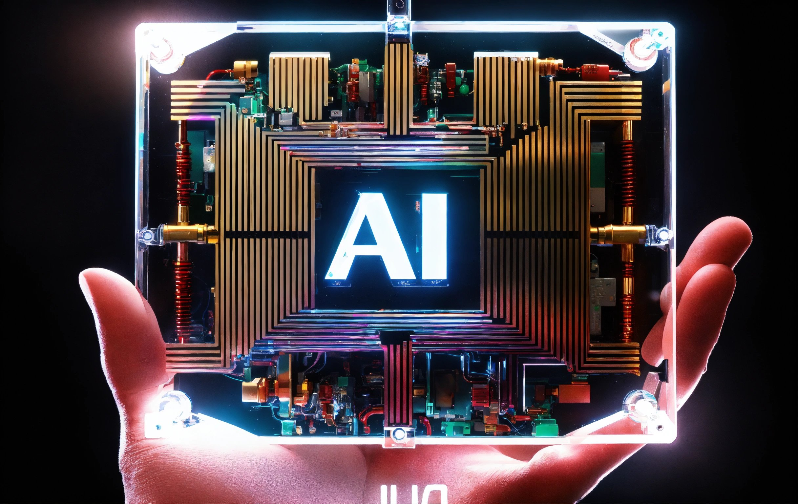

Diapositivas con Inteligencia Artificial
La inteligencia artificial (IA) está transformando la forma en que creamos y presentamos contenido visualmente impactante. Con el avance de los algoritmos de IA, ahora es posible automatizar y optimizar el proceso de diseño de diapositivas, mejorando la eficiencia y la efectividad de nuestras presentaciones.
Una de las formas en que la IA está siendo utilizada en las diapositivas es a través de herramientas de diseño asistido por IA. Estas herramientas utilizan algoritmos avanzados para sugerir diseños, colores y disposiciones de diapositivas que son visualmente atractivos y efectivos en la comunicación de información.
Además del diseño, la IA también se utiliza para generar automáticamente contenido visual para las diapositivas. Desde la selección de imágenes hasta la creación de gráficos y visualizaciones de datos, las herramientas basadas en IA pueden ayudar a los presentadores a crear diapositivas más impactantes en menos tiempo.
Otra área en la que la IA está haciendo olas en las presentaciones es en la personalización y optimización de diapositivas. Los algoritmos de IA pueden analizar el contenido de una presentación y sugerir cambios para mejorar la claridad, coherencia y relevancia del mensaje.
El futuro de las presentaciones con IA es emocionante y prometedor. A medida que la tecnología continúa avanzando, es probable que veamos aún más innovaciones en este espacio, incluyendo la integración de tecnologías de realidad aumentada y virtual para crear experiencias de presentación más inmersivas y cautivadoras.
En resumen, las diapositivas con inteligencia artificial están cambiando la forma en que compartimos información visualmente. Con herramientas de diseño asistido por IA, generación automática de contenido visual y optimización personalizada, las presentaciones están volviéndose más efectivas y atractivas que nunca.